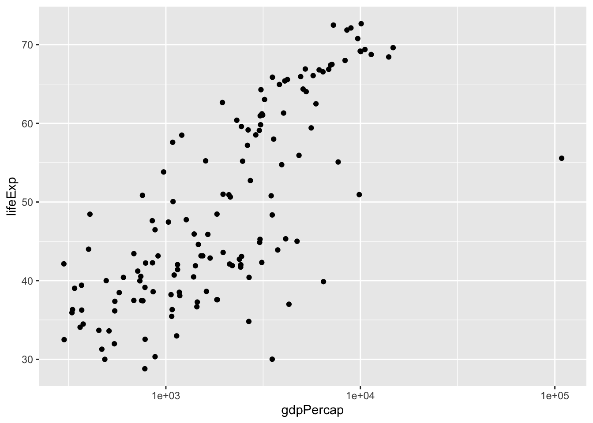
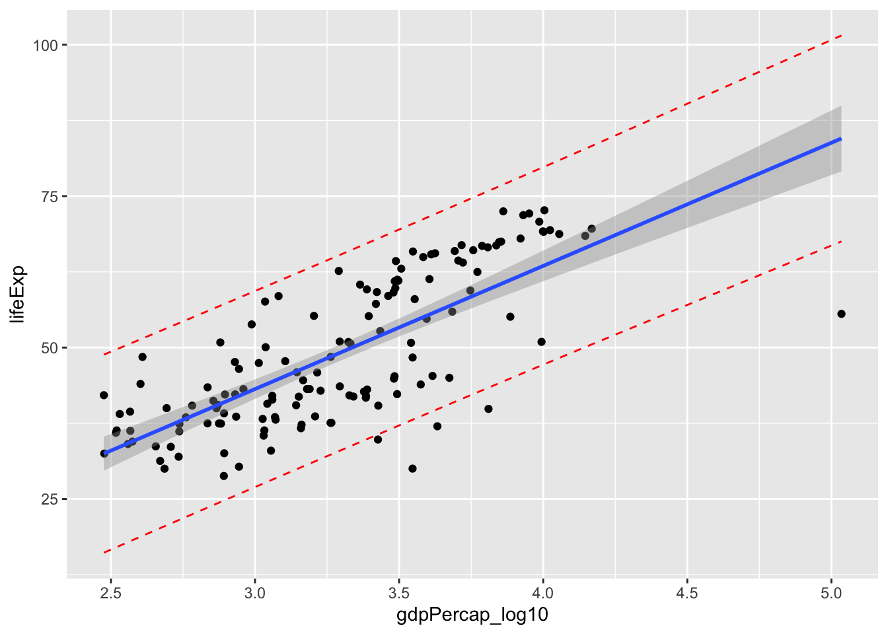
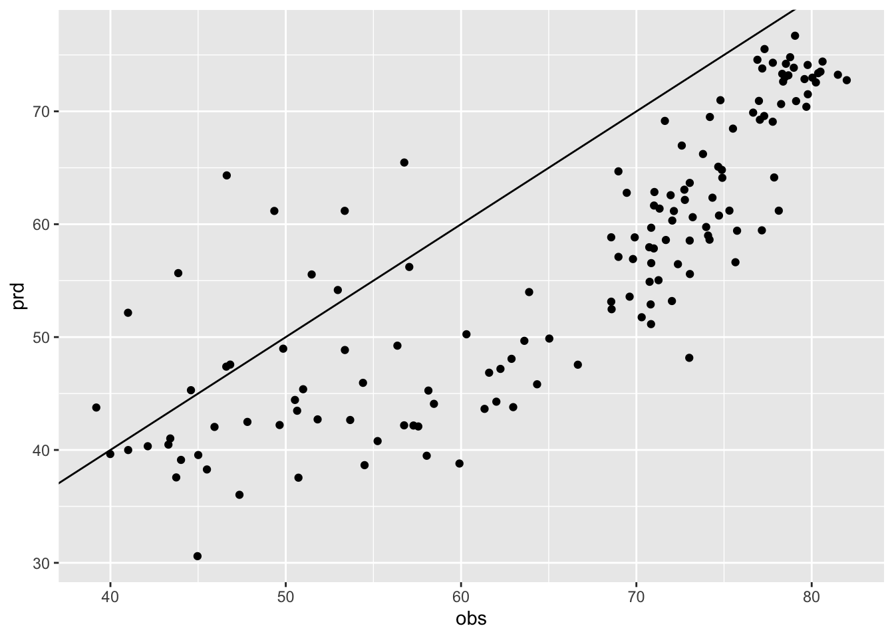
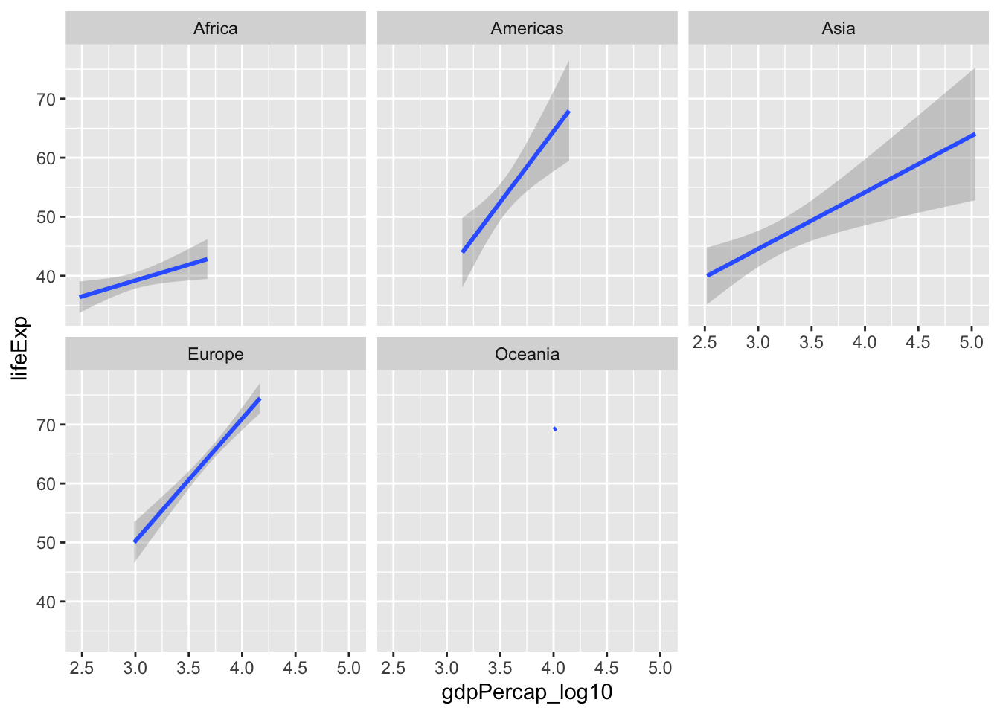
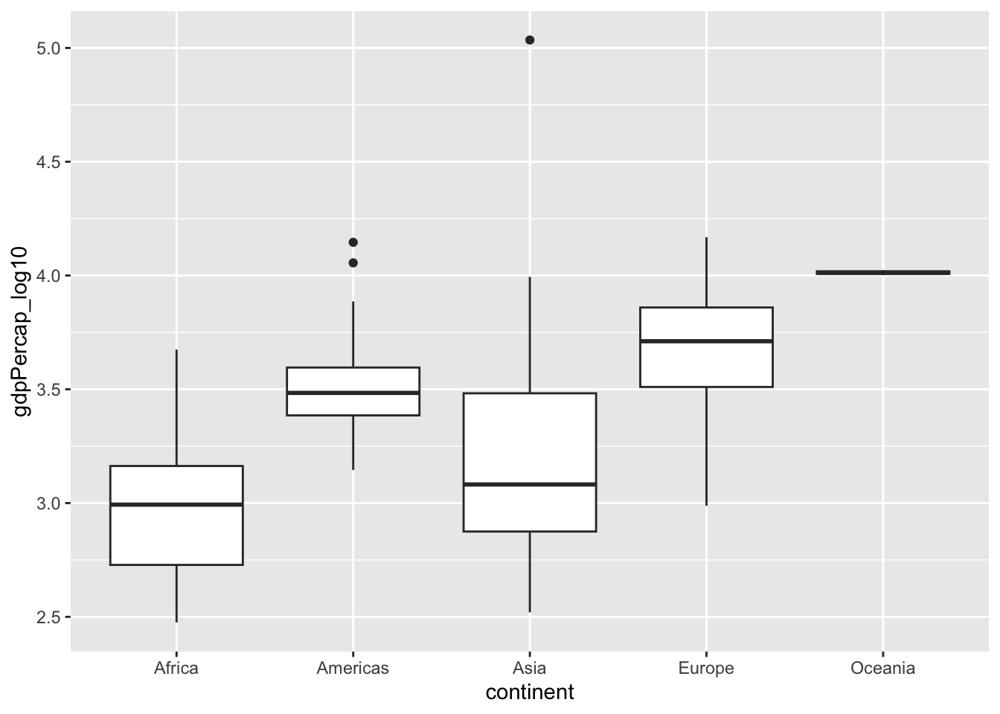

회귀(Regression)
Yoon-Ho Hong
2022-08-30
이번 시간에는 선형 회귀 모델을 학습합니다. 선형 회귀는 최신의 기계학습 기법만큼 흥미롭지 않을 수도 있지만, 많은 경우 매우 유용하고 그렇기 때문에 자주 사용되는 방법입니다. 사실 많은 기계학습 기법이 선형회귀의 일반화 혹은 확장으로 볼 수 있습니다. 따라서, 더 복잡한 기계학습 기법에 대해 학습하기 전에 선형회귀에 대해 명확한 이해를 갖는 것이 매우 중요합니다.
질문
선형회귀 모델을 gapminder 데이터 분석에 적용해서 다음 질문들에 답해보기로 합시다.
- 일인당 국민소득과 기대수명은 상관관계가 있는가?
- 얼마나 강한 상관관계인가?
- 기대수명에 대한 일인당 국민소득의 효과를 선형모델로 설명할 수 있는가?
- 선형모델에서 기대수명에 대한 일인당 국민소득의 효과는
어느정도인가?
- 이 추정치는 얼마나 정확한가?
- 기대수명에 대해 얼마나 정확하게 예측할 수 있는가?
패키지
데이터 분석을 위해 필요한 패키지를 먼저 로딩하겠습니다.
library(gapminder)
library(dplyr)
library(ggplot2)산점도
1952년 데이터를 추출해서 일인당 국민소득(gdpPercap)과 기대수명(lifeExp) 간의 상관관계를 알아보기 위해 산점도를 먼저 그려보겠습니다.
gapminder %>%
filter(year == 1952) %>%
ggplot(aes(gdpPercap, lifeExp)) +
geom_point()
x축 값들이 낮은 수치에 몰려있군요. 로그변환을 하겠습니다.
gapminder %>%
filter(year == 1952) %>%
ggplot(aes(gdpPercap, lifeExp)) +
geom_point() +
scale_x_log10()
이제, 앞서 제기했던 질문들에 대해 하나씩 답해보기로 합시다.
상관관계
일인당 국민소득과 기대수명은 상관관계가 있는가? 얼마나 강한 상관관계인가?
이 질문은 상관관계에 대한 통계적 검정과 상관계수를 묻는
것입니다.
상관분석을 위해 cor.test() 함수를 사용합니다.
df_1952 = gapminder %>%
filter(year == 1952) %>%
mutate(gdpPercap_log10 = log10(gdpPercap))
cor.test(df_1952$gdpPercap_log10, df_1952$lifeExp)##
## Pearson's product-moment correlation
##
## data: df_1952$gdpPercap_log10 and df_1952$lifeExp
## t = 13.326, df = 140, p-value < 2.2e-16
## alternative hypothesis: true correlation is not equal to 0
## 95 percent confidence interval:
## 0.6649636 0.8124327
## sample estimates:
## cor
## 0.7477807위에서 p-value < 2.2e-16 이며, 귀무가설을 유의수준 5%에서 기각할 수 있습니다. 즉, 일인당 국민소득과 기대수명은 양의 상관관계가 있다고 할 수 있습니다.
상관계수는 0.7477807 입니다. 상관계수는 아래와 같이 공분산을 각 변수의 표준편차의 곱으로 나눈 값입니다. 변수의 절대적 크기에 영향을 받지 않도록 정규화한 것이지요.
공분산
\[COV(X,Y)=\frac{1}{n}\sum_{i}(x_i-\bar{x})(y_i-\bar{y})\]
상관계수 \[Corr(X,Y)=\frac{COV(X,Y)}{\sigma_x\sigma_y}\]
선형회귀 모델의 적합
기대수명에 대한 일인당 국민소득의 효과를 선형모델로 설명할 수 있는가?
이 질문은 선형회귀 모델이 데이터에 얼마나 잘 적합한지, 즉 얼마나 잘 설명하고 있는지를 묻는 것입니다. 선형회귀 적합의 정도는 보통 \(R^2\) 통계량을 사용하여 표현합니다.
\[R^2 = \frac{TSS -
RSS}{TSS}\]
TSS: Total sum of squares (aka, SS around the mean)
RSS: Residual sum of squares (aka, SS around the fit)
위 식에서 알 수 있듯이, \(R^2\)는 반응변수의 전체 분산에서 회귀 모델에 의해 설명되는 변동의 비율을 말합니다.
\(R^2\): the proportion of the total variation explained by the fit (regression model)
먼저, 선형 회귀 모델을 적합시키는 함수로 lm()을 사용합니다.
lm_1952 = lm(lifeExp ~ gdpPercap_log10, data = df_1952)통계적 모델링의 결과를 보기위해 summary() 함수를 사용합니다.
summary(lm_1952)##
## Call:
## lm(formula = lifeExp ~ gdpPercap_log10, data = df_1952)
##
## Residuals:
## Min 1Q Median 3Q Max
## -28.9571 -5.7319 0.7517 6.5770 13.7361
##
## Coefficients:
## Estimate Std. Error t value Pr(>|t|)
## (Intercept) -17.846 5.067 -3.522 0.000578 ***
## gdpPercap_log10 20.331 1.526 13.326 < 2e-16 ***
## ---
## Signif. codes: 0 '***' 0.001 '**' 0.01 '*' 0.05 '.' 0.1 ' ' 1
##
## Residual standard error: 8.146 on 140 degrees of freedom
## Multiple R-squared: 0.5592, Adjusted R-squared: 0.556
## F-statistic: 177.6 on 1 and 140 DF, p-value: < 2.2e-16위 예에서 \(R^2\)는 0.5592 입니다. 기대수명 변동의 56%는 일인당 국민소득의 로그변환값에 대한 단순 선형회귀 모델로 설명된다는 뜻입니다.
참고로, adjusted \(R^2\)는 모델의 예측변수의 수를 보정한 값입니다. 예측 변수의 수가 2개 이상인 다중 선형회귀 모델에서는 예측변수와 설명변수의 상관 여부와 관계없이 예측변수의 개수가 증가할 수도록 \(R^2\)는 증가합니다. 따라서, 새로운 예측변수가 추가됨에 따른 우연한 증가분을 보정해야 하는 것입니다.
선형회귀 모델의 적합도에 대한 통계적 검정은 F 분포를 이용합니다.
F 값은 모델에 의해 설명되는 분산을 모델에 의해 설명되지 않는 분산으로 나눈 값입니다.
F 분포에서 확률변수 값이 위에서 구한 F 값보다 큰 경우를 관측할 확률을 구함으로써 귀무가설에 대해 통계적 검정을 합니다.
선형회귀 모델의 모수 추정
기대수명에 대한 일인당 국민소득의 효과는 어느정도이며, 이 추정치는 얼마나 정확한가?
이 질문은 우리가 사용하는 선형회귀 모델을 적합하였을 때, 모수(parameter) 추정의 결과와(기대수명에 대한 일인당 국민소득의 효과), 추정의 불확실성, 즉 표준오차를 묻는 것입니다.
선형회귀 모델의 모수는 최소제곱법을 사용해 추정합니다. 최소제곱법은 잔차제곱의 합(residual sum of squares, RSS)을 최소화하는 계수를 추정하는 방법입니다.
Coefficients에서 gdpPercap에 해당하는 estimate (즉, slope 추정치)와 표준오차가 얼마인지 확인해봅시다.
계수 추정치가 20.331입니다. 이는 log10(gdpPercap)가 1만큼 증가할 때(즉, 일인당 국민소득이 10배 증가할 때) 기대수명이 약 20년 증가한다는 것을 의미합니다.
이러한 추정치가 얼마나 정확한가에 대답하기 위해서는 표준오차를 살펴야합니다.
계수 추정치의 표준오차는 다음 식으로 구합니다.
\[SE(\hat{\beta_1}) = \frac{\sigma}{\sqrt{\sum_{i=1}^{n}{(x_i-\overline{x})^2}}}\]
\(\sigma\)는 랜덤오차(random error)의 표준편차를 가리키며, 그 추정치로 잔차의 표준오차(residual standard error, RSE)를 사용합니다.
\[RSE = \sqrt{RSS/(n-2)}\]
위 식에서 직관적으로 표준오차는 RSS가 작을 수록, 그리고 \(x_i\)가 넓게 퍼질수록, 즉 기울기를 추정할 레버지리(leverage)가 클수록 더 작아진다는 것을 알 수 있습니다.
일반적으로 표준오차는 신뢰구간(confidence interval)을 계산하는데 사용됩니다. 계수 추정치에 대한 95% 신뢰구간은 실제값(모집단에서의 기울기)이 95%의 확률로 존재하는 구간이며 대략 아래와 같은 형태를 가집니다.
\[[\hat{\beta_1}-2SE(\hat{\beta}), \space \hat{\beta_1}+2SE(\hat{\beta})]\]
confint(lm_1952, level = 0.95)## 2.5 % 97.5 %
## (Intercept) -27.86295 -7.828398
## gdpPercap_log10 17.31506 23.347735선형회귀 모델을 적합하면, \(\beta_x\) = 0 라는 귀무 가설에 대한 검정 결과가 제시되는데, 귀무 가설 검정에는 t-statistic 을 사용합니다.
t 값은 아래와 같이 정의합니다.
\[t=\frac{\overline{x}-\mu_o}{SE}\]
\(\bar{x}\): 표본평균(sample
mean)
\(\mu_0\): 모평균(population
mean)
SE: 표준오차(standard error)
여기서 표본평균 \(\overline{x}\)는 최소제곱법(least square method)으로 구한 계수 추정치이고, 모평균 \(\mu_0\)는 귀무 가설에 의해 0 입니다(기울기가 0이라는 것은 상관관계가 없다는 뜻이므로)
자유도가 n-2 (=140)인 t 분포에서(n이 대략 30보다 크면 t 분포는 정규분포와 아주 유사) t 값이 위에서 구한 \(|t|\) 값보다 큰 경우를 관측할 확률(즉, p-value)을 구함으로써 통계적 검정을 할 수 있습니다. 즉, p-value 가 충분히 작으면 귀무가설을 기각합니다.
예측
기대수명에 대해 얼마나 정확하게 예측할 수 있는가?
위에서 신뢰구간은 기대수명에 대한 일인당국민소득의 효과를 둘러싼 불확실성을 수량화하는 것입니다.
한편, 기대수명에 대한 예측의 불확실성을 수량화하는데 관심이 있다면, 신뢰구간 대신 예측구간(prediction interval)을 사용합니다.
예측구간은 신뢰구간보다 항상 더 넓습니다. 이유는 예측구간은 계수에 대한 추정오차(축소가능오차) 뿐만아니라 축소불가능 오차를 포함하기 때문입니다.
선형회귀 모델의 회귀 직선과 신뢰구간, 그리고 예측 구간을 모두 포함하는 산점도를 그려보겠습니다.
predictions = predict(lm_1952, newdata = df_1952, interval = "predict")
head(predictions)## fit lwr upr
## 1 40.94837 24.74135 57.15539
## 2 47.30439 31.13999 63.46878
## 3 51.05723 34.89220 67.22226
## 4 54.26202 38.08128 70.44276
## 5 58.83793 42.61063 75.06524
## 6 63.51481 47.21080 79.81881df_1952_pred = cbind(df_1952, predictions)
df_1952_pred %>%
ggplot(aes(gdpPercap_log10, lifeExp)) +
geom_point() +
stat_smooth(method = "lm", level = 0.95) +
geom_line(aes(y=lwr), col = "red", linetype = "dashed") +
geom_line(aes(y=upr), col = "red", linetype = "dashed")## `geom_smooth()` using formula = 'y ~ x'
1952년 데이터를 이용해 학습시킨 이 단순 선형회귀 모델을 이용해 2002년 기대수명을 예측해봅시다.
df_2002 = gapminder %>%
filter(year == 2002) %>%
select(lifeExp, gdpPercap) %>%
mutate(gdpPercap_log10 = log10(gdpPercap))예측값의 산출을 위해 predict() 함수를 사용합니다.
pred = predict(lm_1952, newdata = df_2002)
head(pred)## 1 2 3 4 5 6
## 40.33009 56.63139 57.85411 52.15522 62.34880 73.38059예측값과 실제 관측값이 얼마나 다른지 살펴봅시다.
df = data.frame(obs = df_2002$lifeExp, prd = pred)
ggplot(df, aes(obs, prd)) +
geom_point() +
geom_abline(slope = 1, intercept = 0) 
2002년 데이터 포인트들은 위 그림에서 직선(y=x) 아래 주로 분포되어 있습니다. 1952년 데이터로 학습한 모델을 2002년 데이터에 적용했을 때 기대 수명을 실제보다 낮게 예측하는 경향이 있다는 것을 알 수 있습니다.
회귀모델의 성능 평가
회귀모델의 예측 정확도를 나타내는 정량 지표로 RMSE (Root mean squared error)를 사용합니다.
rmse를 구하는 함수를 정의해봅시다.
\[RMSE = \sqrt{\frac{1}{N}{\sum_{i=1}(y_i-\hat{y})^2}}\] 먼저, 1952년 학습 데이터셋에서의 rmse를 구해봅시다.
df_1952_pred %>%
mutate(sqe = (fit - lifeExp)^2) %>%
summarise(rmse = sqrt(sum(sqe)/142))## rmse
## 1 8.0887391952년 데이터로 학습한 모델을 2002년 검정 데이터셋(test)에 적용해서 기대수명을 예측할 때, 예측 모델의 정확성을 구해봅시다(rmse)
df %>%
mutate(sqe = (pred - obs)^2) %>%
summarize(rmse = sqrt(sum(sqe)/140))## rmse
## 1 11.44232Confidence interval을 구해봅시다.
더 생각해볼 문제들
- 다변량(multivariate)
- Outliers & Leverage
- 교호 작용(interaction)
- 공선성(collinearity)
- 비선형 회귀
다변량 모델
lm2_1952 = lm(lifeExp ~ gdpPercap_log10 + continent,
data = df_1952)
summary(lm2_1952)##
## Call:
## lm(formula = lifeExp ~ gdpPercap_log10 + continent, data = df_1952)
##
## Residuals:
## Min 1Q Median 3Q Max
## -16.5537 -3.2079 -0.1173 3.4868 14.3635
##
## Coefficients:
## Estimate Std. Error t value Pr(>|t|)
## (Intercept) 6.302 4.764 1.323 0.188040
## gdpPercap_log10 10.988 1.567 7.012 1.0e-10 ***
## continentAmericas 8.144 1.758 4.631 8.4e-06 ***
## continentAsia 5.043 1.437 3.508 0.000612 ***
## continentEurope 17.639 1.811 9.740 < 2e-16 ***
## continentOceania 18.862 4.823 3.911 0.000145 ***
## ---
## Signif. codes: 0 '***' 0.001 '**' 0.01 '*' 0.05 '.' 0.1 ' ' 1
##
## Residual standard error: 6.312 on 136 degrees of freedom
## Multiple R-squared: 0.7429, Adjusted R-squared: 0.7335
## F-statistic: 78.6 on 5 and 136 DF, p-value: < 2.2e-16교호 작용
lm3_1952 = lm(lifeExp ~ gdpPercap_log10*continent,
data = df_1952)
summary(lm3_1952)##
## Call:
## lm(formula = lifeExp ~ gdpPercap_log10 * continent, data = df_1952)
##
## Residuals:
## Min 1Q Median 3Q Max
## -14.7288 -3.5801 0.1119 2.5009 15.2270
##
## Coefficients:
## Estimate Std. Error t value Pr(>|t|)
## (Intercept) 23.053 8.239 2.798 0.00591 **
## gdpPercap_log10 5.382 2.743 1.962 0.05184 .
## continentAmericas -54.739 19.795 -2.765 0.00650 **
## continentAsia -7.220 10.754 -0.671 0.50312
## continentEurope -34.999 17.645 -1.984 0.04938 *
## continentOceania -3.480 1571.782 -0.002 0.99824
## gdpPercap_log10:continentAmericas 18.659 5.774 3.231 0.00156 **
## gdpPercap_log10:continentAsia 4.196 3.483 1.205 0.23048
## gdpPercap_log10:continentEurope 15.350 5.038 3.047 0.00279 **
## gdpPercap_log10:continentOceania 6.999 391.713 0.018 0.98577
## ---
## Signif. codes: 0 '***' 0.001 '**' 0.01 '*' 0.05 '.' 0.1 ' ' 1
##
## Residual standard error: 6.04 on 132 degrees of freedom
## Multiple R-squared: 0.7715, Adjusted R-squared: 0.7559
## F-statistic: 49.52 on 9 and 132 DF, p-value: < 2.2e-16df_1952 %>%
ggplot(aes(gdpPercap_log10, lifeExp)) +
stat_smooth(method = "lm", level = 0.95) +
facet_wrap(~continent)## `geom_smooth()` using formula = 'y ~ x'## Warning in qt((1 - level)/2, df): NaNs produced## Warning in max(ids, na.rm = TRUE): no non-missing arguments to max; returning
## -Inf
공선성
문제가 되는 공선성 및 다중 공선성은 두 개(공선성) 또는 두 개 이상의 예측 변수(다중 공선성)가 서로 높은 상관관계를 가질 때 발생합니다.
이로 인해 계수의 표준 오차 및 신뢰 구간이 커지는 분산 인플레이션이 발생할 수 있습니다. 기본적으로 여러 예측 변수가 동일한 정보를 많이 가지고 있는 경우, 모델 적합 과정에서 해당 예측 정보와 결과변수 간의 관계를 추정하기 어려울 수 있으며, 어떤 예측 변수가 어떤 영향을 미치는지 불확실성이 증가합니다.
continent 변수와 gdpPercap_log10 변수 간에 상관관계가 있는지 알아봅시다.
col_mod = lm(gdpPercap_log10 ~ continent, data = df_1952)
summary(col_mod)##
## Call:
## lm(formula = gdpPercap_log10 ~ continent, data = df_1952)
##
## Residuals:
## Min 1Q Median 3Q Max
## -0.69451 -0.22354 -0.03478 0.17870 1.85245
##
## Coefficients:
## Estimate Std. Error t value Pr(>|t|)
## (Intercept) 2.98811 0.04772 62.614 < 2e-16 ***
## continentAmericas 0.54610 0.08375 6.520 1.25e-09 ***
## continentAsia 0.19440 0.07659 2.538 0.0123 *
## continentEurope 0.69474 0.07890 8.806 5.08e-15 ***
## continentOceania 1.02451 0.24797 4.132 6.24e-05 ***
## ---
## Signif. codes: 0 '***' 0.001 '**' 0.01 '*' 0.05 '.' 0.1 ' ' 1
##
## Residual standard error: 0.3441 on 137 degrees of freedom
## Multiple R-squared: 0.4309, Adjusted R-squared: 0.4143
## F-statistic: 25.94 on 4 and 137 DF, p-value: 5.172e-16df_1952 %>%
ggplot(aes(continent, gdpPercap_log10)) +
geom_boxplot()
하지만 어느 정도의 상관관계가 지나친지 어떻게 알 수 있을까요? 어떤 사람들은 변수 간 상관관계가 0.8 이상인 경우 모델에서 예측 변수를 제외할 것을 제안하지만, 이는 매우 임의적인 규칙이며 때로는 그 정도의 상관관계에도 불구하고 모델 추정치가 잘 작동하는 경우도 있습니다. 다른 경우에는 각 변수 쌍의 상관관계는 낮지만 다중공선성(하나의 변수가 다른 변수를 매우 잘 예측하는 변수 그룹)이 존재합니다. 어떤 예측 변수를 포함하거나 제외할지 결정하려면 어떻게 해야 할까요?
한 가지 해결책은 공선성 또는 다중 공선성이 “너무 큰지” 결정하고, 특정 예측 변수에 대해 “너무 큰” 경우 모델에서 해당 예측변수를 제거하는 것입니다.
공선성 및 다중 공선성을 보다 정확하게 확인하는 방법은 VIF (variance inflation factor)를 사용하는 것입니다. 이를 구하기 위해 패키지 car::vif() 함수를 사용하겠습니다.
하지만… vif가 실제로 측정하는 것은 무엇일까요?
\[VIF=\frac{1}{1-R_i^2}\]
\(R_i^2\) 값은 i번째 예측변수를 결과변수로 사용하고 다른 모든 예측변수를 예측변수로 사용합니다. 따라서 \(R_i^2\)는 i번째 예측변수의 값을 다른 예측변수를 기반으로 얼마나 잘 추정할 수 있는지를 측정합니다. \(R_i^2\) 값이 크면 i번째 예측변수는 다른 예측변수와 동일한 정보를 제공하는 중복 예측변수를 나타냅니다.
VIF가 클수록 예측변수 간에 문제가 있는 상관관계가 더 많음을 나타냅니다. VIF는 예측변수 간의 상관관계로 인해 모델 계수 추정치의 분산이 “부풀려지는” 요인을 측정한다는 것입니다. VIF가 크면 불확실성이 높은 것을 의미합니다.
library(car)## Loading required package: carData##
## Attaching package: 'car'## The following object is masked from 'package:dplyr':
##
## recodecar::vif(lm2_1952)## GVIF Df GVIF^(1/(2*Df))
## gdpPercap_log10 1.75724 1 1.325609
## continent 1.75724 4 1.073010VIF (예측변수가 categorical 변수이면 GVIF)가 1이면 상관관계로 인해 모델 추정치에 추가 불확실성이 없다는 의미입니다. VIF (GVIF)가 4보다 크면 문제가 있는 것이므로 문제를 해결해야 하며, VIF (GVIF)가 10보다 크면 문제를 해결하기 위해 반드시 조치를 취해야 합니다. 이러한 경험 법칙을 스케일링된 GVIF에 사용하려면, 규칙을 적용하기 전에 스케일링된 GVIF 값을 제곱합니다.